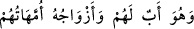
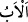
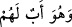

perde arkasından isteyin.” (el-Ahzâb, 33/53). Öyleyse onlarla halvet ve yolculuk câiz
değildir. Onlar mü’minlere, mü’minler de onlara mirasçı olmaz.
Ebû Hanîfe (r.h.)’ın şöyle dediği nakledilmiştir: “İnsanlar (bütün mü’minler) Âişe
(r.a.)’ya mahremdirler. O mü’minlerden kiminle yolculuk yapsa mahremiyle yolculuk
yapmış olur. Ondan başka diğer kadınlar için böyle bir durum yoktur.” Bunun sebebi
Nur suresinde ifk (iftira) kıssasında geçmişti.
Böylece âyetteki bu anneliğin mânâsının sadece onlarla nikahın/evliliğin haram
olmasıdır. Bunun için Âişe (r.a.): “Biz kadınların değil, bilakis erkeklerin annesiyiz.”
demiştir. Bazı müfessirlerin söylediği ‘Onlar erkek-kadın tüm mü’minlerin anneleridir.’
sözü zayıf görülmüştür. Buradaki annelik ve haramlık hükmü peygamberin hanımlarının
şahıslarıyla sınırlı olunca bu durum onların aşîretlerine/akrabalarına geçmez. Mesela
onların kızlarına ‘mü’minlerin kız kardeşleri’, erkek kardeşlerine ‘mü’minlerin
dayıları’, kız kardeşlerine de ‘mü’minlerin teyzeleri’ denilemez. Bu yüzden İmam Şâfiî:
“Zübeyr, Hz. Ebu Bekr’in kızı Esmâ ile evlendi.” demiş, Esmâ, mü’minlerin annesi Hz.
Âişe’nin kız kardeşi olduğu halde onun için ‘mü’minlerin teyzesi’ denmemiştir.
Onları nikâhlamanın haram olması Hz. Peygamber (s.a.)’e saygıdan ötürüdür. O’na
saygı göstermek ise vâcibdir. O’nun kâmil vârislerine hürmet göstermek de gereklidir.
Bu sebeple bazı büyükler şöyle demiştir: “Mürid şeyhinin boşadığı veya vefât edip
geride bıraktığı hanımıyla evlenemez.” Her muallimin talebesiyle durumunu buna kıyas
et. Bunun böyle olması bu evlilikte ne dünyâda ne âhirette hiçbir bereket olmaması
sebebiyledir. Gerçi bu konuda fetvâda ruhsat vardır. Fakat takvâ, fetvânın üzerindedir.
Bunu bil.
Übeyy (r.a.)’ın mushafında ve İbn Mes‘ûd kırâatında “__WORD__ (O
(Peygamber) onların babasıdır, eşleri de onların analarıdır.)” diye geçmektedir.
Bundan maksad tam bir şefkat ve tartışmasız bir rahmettir. Bazıları şöyle demiştir: Yâni
Hz. Peygamber (s.a.) dinde mü’minlerin babasıdır. Çünkü her peygamber ebedi hayatın
kendisiyle elde edilmesi konusunda asıl olması bakımından ümmetinin babasıdır. İşte
bundan dolayı mü’minler kardeş olmuştur.
İmam Râğıb şöyle der. “__WORD__, baba demektir. Aynı şekilde bir şeyin var olmasına,
ıslah edilmesine ya da ortaya çıkmasına sebep olan herkese de ‘baba’ denir. İşte bunun
için Peygamberimiz (s.a.) “mü’minlerin babası” diye isimlendirilmiştir. Allah Teâlâ
şöyle buyuruyor: “Peygamber, mü’minlere kendi canlarından daha yakındır. Eşleri,
onların analarıdır.” Bazı kırâatlarda burada şu ifâde de vardır: “__WORD__ (O da
onların babasıdır.)” Rivâyet edildiğine göre Hz. Peygamber (s.a.) Hz. Ali’ye “Ben ve
sen bu ümmetin babasıyız.”[169] buyurmuştur. Hz. Peygamber (s.a.): “Benim sebebim ve
nesebim dışında bütün sebep ve nesebler sona erer.”[170] sözüyle de buna işâret
etmiştir.”
“Akraba olanlar, Allâh’ın Kitabına” levh-i mahfûza veya indirilen bu Kur’ân’a, yâni